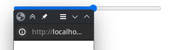

1.open test window
2.slide this slider so that its height is the same as the title bar of the window, screenshot provided(for higher y res you can do less)
3.slide this slider so that its height is the same as the windows height

4.what x resolution(5 recommended)
5.start